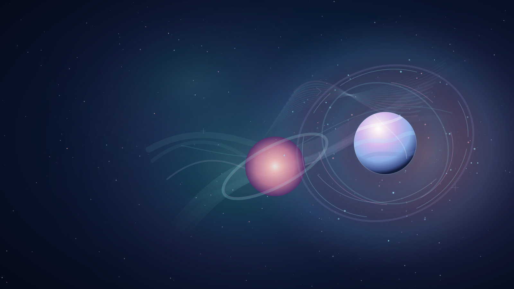

ŻYCIE GWIAZDY · HISTORIA NAPISANA PRZEZ FIZYKĘ
Wszystko zaczyna się od jednej liczby.
Gdybyś mógł poznać tylko jeden szczegół o nowo narodzonej gwieździe, zapytaj o jej masę. Ta jedna liczba pozwoli przewidzieć zaskakująco wiele: kolor, blask, długość życia i możliwy finał.
Wyobraź sobie gwiazdę, której jeszcze nie ma.
W pewnym zakątku Galaktyki unosi się zimny obłok wodoru, helu i pyłu. Nikt nie wie, że niewielka część tej materii kiedyś rozbłyśnie i przez miliony albo miliardy lat będzie odmierzać czas własnym światłem.
Gdy gęstszy fragment obłoku zaczyna zapadać się pod wpływem grawitacji, rodzi się zalążek gwiazdy. Ale zanim w centrum na dobre rozpocznie się fuzja wodoru, los obiektu już w znacznym stopniu zależy od masy, którą zdoła zgromadzić. [1, 2]
Gwiazda mała może świecić tak oszczędnie, że przeżyje obecny wiek Wszechświata wielokrotnie. Gwiazda bardzo masywna będzie świecić olśniewająco, lecz jej życie może skończyć się po zaledwie kilku milionach lat. Najjaśniejsza nie znaczy najtrwalsza. [1]
Jedna otrzymuje 0,2 masy Słońca, druga 25 mas Słońca. Która z nich będzie świeciła dłużej?
Odpowiedź znajdziesz w kolejnych rozdziałach — i sprawdzisz ją w laboratorium.Gwiazdy rodzą się w ciemności.
Najpiękniejsze obłoki na zdjęciach teleskopowych nie są gotowymi gwiazdami. To miejsca, w których nowa gwiazda może dopiero powstawać.
 OBSERWACJA WEBBA / 2022
OBSERWACJA WEBBA / 2022Filary Stworzenia. Tu zaczynają się nowe historie.
Te olbrzymie struktury w Mgławicy Orzeł, około 6500 lat świetlnych od Ziemi, są obszarem formowania młodych gwiazd. Webb pozwala zajrzeć w pył dzięki obserwacjom podczerwonym. Jasne czerwonawe punkty mogą wskazywać młode gwiazdy. [3]
Obraz: NASA, ESA, CSA, STScI; J. DePasquale, A. Koekemoer, A. Pagan (STScI). Pełny opis i pochodzenie zdjęcia. Kolory są opracowaniem danych z różnych filtrów podczerwonych.Gęstszy fragment obłoku może zacząć kurczyć się, jeśli działanie grawitacji przeważy nad siłami podtrzymującymi obłok.
Materia opada ku centrum. Obiekt nagrzewa się i może rosnąć, zbierając dalszy gaz.
Po osiągnięciu odpowiednich warunków w jądrze energia fuzji wodoru wspiera równowagę gwiazdy.
Przez większość życia gwiazda robi coś pozornie nudnego.
Astronomowie nazywają ten okres ciągiem głównym. W jądrze wodór zmienia się w hel, a ciśnienie gorącej materii przeciwdziała grawitacji. Gwiazda może pozostawać w takim stanie przez bardzo długi czas. [1]
Niewielkie gwiazdy są słabsze, chłodniejsze i mogą oszczędnie zużywać wodór przez setki miliardów, a nawet biliony lat. Nie znamy jeszcze żadnego czerwonego karła, który zdążył umrzeć ze starości — Wszechświat jest na to za młody.
Olbrzymia masa ściska jądro tak mocno, że fuzja przebiega bardzo intensywnie. Gwiazda może być tysiące lub miliony razy jaśniejsza od Słońca, lecz spalanie paliwa trwa znacznie krócej.
Dlaczego czerwony olbrzym bywa chłodniejszy, ale jaśniejszy?
Bo jasność zależy nie tylko od temperatury powierzchni, lecz także od rozmiarów gwiazdy. Na diagramie Hertzsprunga–Russella zestawiamy temperaturę i jasność. Położenie gwiazdy zdradza jej stan ewolucyjny.
To statyczny schemat rozmieszczenia populacji, nie rzeczywisty pomiar ani ścieżka jednego konkretnego obiektu. W laboratorium 29 znajduje się osobny, obliczany diagram HR dla wybranej masy.
Żadna gwiazda nie świeci wiecznie. Ale nie wszystkie umierają tak samo.
O przyszłości decyduje przede wszystkim masa — a przy końcu życia także utrata materii, obrót, skład chemiczny oraz obecność towarzysza. To dlatego prosta granica między białym karłem, gwiazdą neutronową i czarną dziurą jest w rzeczywistości rozmyta. [1, 2]
Biały karzeł
Gwiazda o masie zbliżonej do Słońca może rozrosnąć się w czerwonego olbrzyma, odrzucić zewnętrzne warstwy i pozostawić gorące, gęste jądro. Tak kończy swoją ewolucję bez wybuchu supernowej z kolapsem jądra.
Ścieżka gwiazd o małej i pośredniej masie. Bardzo małe czerwone karły przeżyją jeszcze niezwykle długo.Gwiazda neutronowa
W pewnych masywnych gwiazdach jądro zapada się pod własnym ciężarem. Materia staje się ekstremalnie gęsta. Jeśli pozostałość nie jest zbyt ciężka, może powstać gwiazda neutronowa.
To nie jest automatyczny los każdej gwiazdy powyżej jednej sztywnej masy początkowej.Czarna dziura
Jeżeli zapadające się jądro nie może utrzymać równowagi, może utworzyć czarną dziurę. Niektóre bardzo masywne gwiazdy zapadają się z towarzyszącą eksplozją, a inne mogą kolapsować bez jasnej supernowej.
Wynik zależy od przebiegu ewolucji i masy końcowego jądra, nie wyłącznie od suwaka masy początkowej.Widzimy nie tylko narodziny. Widzimy także pozostałości.
Najważniejsza różnica między piękną ilustracją a astronomią? Teleskopy dostarczają danych. Oto ślad prawdziwej eksplozji masywnej gwiazdy.
 OBSERWACJA WEBBA / CASSIOPEIA A
OBSERWACJA WEBBA / CASSIOPEIA AMateria po wybuchu ma własną historię.
Cassiopeia A to pozostałość supernowej w gwiazdozbiorze Kasjopei. Na obrazie Webba widać rozległe struktury wyrzuconej materii i pyłu, które oddziałują z otoczeniem. Jej centralna gwiazda neutronowa jest rozpoznawana dzięki innym obserwacjom. [4]
Zdjęcie: NASA, ESA, CSA, D. Milisavljevic, T. Temim, I. De Looze, J. DePasquale (STScI). Opis naukowy i autorstwo w ESA/Webb. Barwy przypisano emisji w różnych pasmach podczerwieni.Gwiazda może umrzeć, ale materia, którą oddaje przestrzeni, może wejść w skład przyszłych gwiazd i planet.
Nie każdy pierwiastek powstaje wyłącznie w supernowych; kosmiczne pochodzenie materii obejmuje wiele procesów, w tym wcześniejszą nukleosyntezę gwiazdową.Gwiazdy to nie przepowiednie z automatu.
Nasze laboratorium pokazuje ważną zasadę: masa jest jednym z najpotężniejszych parametrów sterujących ewolucją gwiazdy. Dzięki niej można porównać orientacyjne długości życia, temperaturę, jasność, fazy i potencjalne pozostałości.
Ale prawdziwa ewolucja nie ma tylko jednej zmiennej. Metaliczność, wiatr gwiazdowy, rotacja, transfer masy w układzie podwójnym oraz szczegóły kolapsu mogą zmienić finał. W rzeczywistych badaniach używa się znacznie dokładniejszych modeli numerycznych.
**Bardzo ważne:** symulator pokazuje hipotetyczny finał także dla gwiazd o masie 0,1–0,2 Słońca. To przyszłość tak odległa, że żaden podobny czerwony karzeł nie zdążył jeszcze przejść całej ewolucji. Dla gwiazd masywnych model stosuje uproszczone przedziały mas, a nie pewną prognozę supernowej, gwiazdy neutronowej czy czarnej dziury.
MASZ W RĘKU JEDEN PARAMETR
Zmień masę. Przeczytaj inną biografię.
Laboratorium rozpoczyna się od formowania gwiazdy. Wybierz masę, przesuwaj suwak czasu, porównaj fazy życia i punkt na diagramie Hertzsprunga–Russella. Następnie sprawdź, jak odmienny finał zobaczysz dla znacznie masywniejszej gwiazdy.
Gwiazda, której zabraknie czasu
Wybierz 0,2 M☉. Jak długo ma trwać jej modelowe życie? Czy Wszechświat jest już na tyle stary, by taką gwiazdę widzieć w ostatniej fazie?
Bez supernowej
Wybierz 1 M☉, przesuń oś czasu i przejdź przez czerwonego olbrzyma do białego karła.
Jasno, ale krótko
Wybierz 12 M☉. Porównaj jej czas życia z czasem życia Słońca, a potem odszukaj fazę supernowej.
Czy czarna dziura jest nieunikniona?
Wybierz 25 M☉. Zobacz finał wskazany przez model i przeczytaj, dlaczego w prawdziwej astrofizyce wynik nie jest tak prosty.
Przewijanie osi życia w laboratorium nie odpowiada równomiernemu upływowi czasu obserwowanego przez teleskop. Temperatury, jasności, czasy faz i granice końcowych stadiów są dydaktycznymi przybliżeniami, nie szczegółowymi ścieżkami obliczonymi przez kod ewolucji gwiazd.